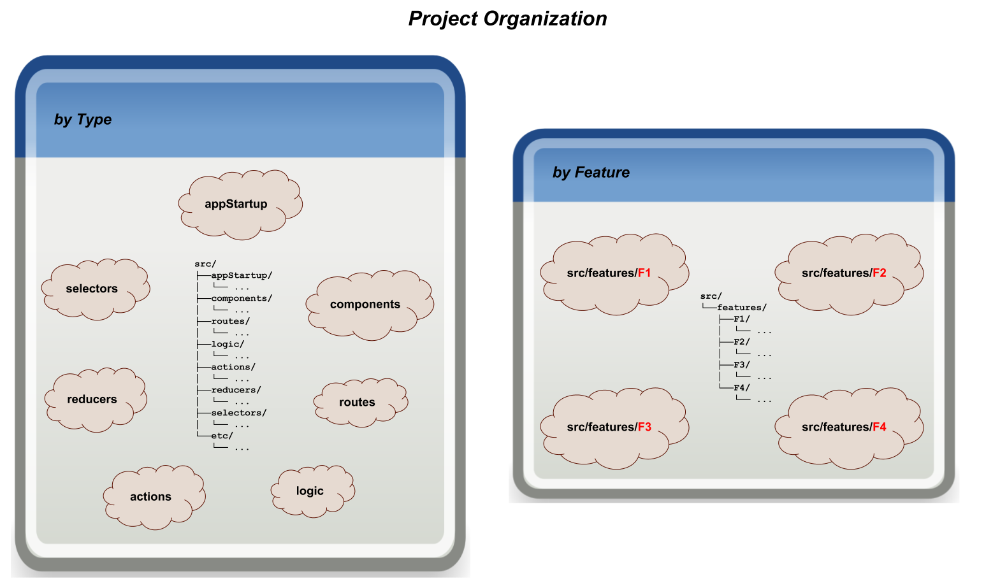

Basic Concepts
This section will introduce you to feature-based development and build up high-level feature-u concepts.

Feature Based Development
At a 30,000 ft view, feature-based development (as in most software) is all about dissecting hard problems into smaller pieces. Even when I started my career (back in the 70's), this was a prominent quote:
-
"All problems in computer science can be solved by another level of indirection." David Wheeler
By breaking up your application into features, each feature can focus on a more specific and isolated set of tasks. In some ways you can think of a feature as a "mini application"!
There are many design considerations in defining your feature boundaries. You can find several articles on this topic that provide insight on feature-based design.
For the most part, these considerations are part of the design of each individual project. While feature-u does not dictate overall design considerations, it does however facilitate good feature-based principles (such as encapsulation). This will be the focus of this section.
Segregating Features
If you are like me, when you think about feature-based development, the first thing that comes to mind is to isolate your code into feature directories.

In doing this your code is organized by what it accomplishes (i.e. features), rather than what it is (i.e. components, routes, logic, actions, reducers, selectors, etc.).
By segregating your features into individual directories, there is a semblance of isolation.
Feature Goals
Our goal is to encapsulate each feature in such a way as to make them truly plug-and-play. But how is this accomplished?
The directory structure is just a start. There are several hurdles that must be overcome to realize our goal ...
How do we encapsulate and isolate our features, while still allowing them to collaborate with one another?
How can selected features introduce start-up initialization (even injecting utility at the root DOM), without relying on some external startup process?
How can feature-based UI Composition be accomplished in an isolated and autonomous way?
How do we configure our chosen frameworks now that our code is so spread out?
How do we enable/disable selected features which are either optional, or require a license upgrade?
In short, how do we achieve a running application from these isolated features?
When you boil it all down, there are two overriding characteristics that must be accomplished to achieve our goals:
Feature Runtime Consolidation: pulling our features back together into one running applicationFeature Collaboration: provide a mechanism by which our features can interact with one another
As it turns out, everything else is a byproduct of these two artifacts. Let's take a closer look at each of these items.
Feature Runtime Consolidation
Now that we have isolated our features into separate entities, how do we bring them back together so they run as one application? We must be able to pull and configure various aspects of our individual features, and "launch" them as a single homogeneous running application.

This concern can be further divided into two sub-concerns:
-
Some features may require certain startup initialization. As an example, a feature that encapsulates some DB abstraction will rely on a run-time setup of a DB service.
Certainly we don't want to rely on some global app logic to accomplish this (once again, we want our features to be encapsulated and self-sufficient).
-
If your application relies on other frameworks, chances are there are resources contained within each feature that must be accumulated and fed into the framework configuration process.
How is this accomplished?
Feature Collaboration
The second characteristic (mentioned above) is Feature Collaboration - providing a mechanism by which our features can interact with one another.
A best practice of feature-based development (to the extent possible) is to treat each feature as an isolated implementation. Most aspects of a feature are internal to that feature's implementation (for example, actions are typically created and consumed exclusively by logic/reducers/components that are internal to that feature).
From this perspective, you can think of each feature as it's own isolated mini application.
With that said however, we know that "no man is an island"! Any given feature ultimately exists as part of a larger application. There are cases where a feature needs to promote a limited subset of it's aspects to other features. For example, a feature may need to:
- be knowledgeable of some external state (via a selector)
- emit or monitor actions of other features
- consolidate component resources from other features - as in UI Composition
- invoke the API of other features
- etc. etc. etc.
These items form the basis of why
Cross Feature Communication and
Feature Based UI Composition are needed.

To complicate matters, as a general rule, JS imports should NOT cross feature boundaries. The reason being that this cross-communication should be limited to public access points - helping to facilitate true plug-and-play.

Given all this then, how is Cross Feature Communication achieved in a way that doesn't break encapsulation?
Features need a way to promote their Public Interface to other features, and consume other feature's Public Assets.
The feature-u Solution
Let's take a look at the solution feature-u provides for all of these goals. The following sections will build feature-u concepts incrementally.
launchApp()
launchApp() is an essential utility in feature-u. It is an
agent, working on your behalf, which provides the foundation that
accomplishes all the goals of feature-u! It facilitates both
Feature Runtime Consolidation and Feature Collaboration.
With this utility, your mainline startup process is extremely
simple ... it merely invokes launchApp(), and you are done!
The launchApp() function actually starts your application running,
employing various hooks that drive BOTH App Initialization and
Framework Configuration!
You can find launchApp() examples in the
Usage section, and
Launching Your Application.
How does this work? What are the bindings to launchApp()?
... let's delve a bit deeper
Feature Object
To accomplish this, each feature promotes a Feature object (using
createFeature()), that catalogs aspects of interest to
feature-u.
This is the primary input to launchApp().

aspects
In feature-u, "aspect" (little "a") is a generalized term used to refer to the various ingredients that (when combined) constitute your application. Aspects can take on many different forms: UI Components • Routes • State Management (actions, reducers, selectors) • Business Logic • Startup Initialization Code • etc. etc. etc.
Not all aspects are of interest to feature-u ... only those that are needed to setup and launch the application ... all others are considered an internal implementation detail of the feature. As an example, consider the redux state manager: while it uses actions, reducers, and selectors ... only reducers are needed to setup and configure redux.
The Feature object is merely a lightweight container that
holds aspects of interest to feature-u. These aspects can either
be Built-In aspects (from core feature-u),
or Extendable aspects (from plugin extensions).
Running the App
Let's see how launchApp() accommodates the two sub-goals of running the app:
App Initialization
Because launchApp() is in control of starting the app, it
has a unique opportunity to introduce Application Life Cycle Hooks.
This allows each feature to perform app-specific initialization, and even inject static content in the root of your DOM.
There are three hooks:
Feature.appWillStart()- invoked early in app startup (supports accumulative static root DOM injection)Feature.appInit()- invoked later in app startup (supports blocking async initialization)Feature.appDidStart()- invoked when app startup completes (triggers "app is running" processes)
Application Life Cycle Hooks greatly simplify your app's mainline
startup process, because initialization specific to a given feature
can be encapsulated in that feature.
Framework Configuration
A fundamental goal of feature-u is to automatically configure the framework(s) used in your run-time-stack (by accumulating the necessary resources across all your features). This greatly reduces the boilerplate code within your app.
How can this be accomplished when there are so many frameworks out there ... and every project uses a different mix?
feature-u is extendable! It operates in an open plugable architecture where Extendable Aspects integrate feature-u to other frameworks, matching your specific run-time stack. This is good, because not everyone uses the same frameworks!
Extendable Aspects can be found in external NPM packages (the normal case), or you
can create your own using createAspect() (a more advanced topic).
The Aspect object contains a series of Aspect Life Cycle Hooks that are
invoked under the control of feature-u (launchApp()).
In general, an Aspect's responsibility is to:
- accumulate
AspectContentacross all features - perform some desired setup and configuration
- expose it's functionality in some way (typically a framework integration)
An Aspect automatically extends the Feature object by allowing
it's AspectContent to be "cataloged" in the Feature using
Aspect.name as it's key. In the diagram above, you can see that
the
reducerAspect(Aspect.name: 'reducer') permits aFeature.reducer: reducerContentconstructand the
logicAspect(Aspect.name: 'logic') permits aFeature.logic: logicContentconstruct
It is important to understand that the interface to your chosen frameworks is not altered in any way. You use them the same way you always have (just within your feature boundary). feature-u merely provides a well defined organizational layer, where the frameworks are automatically setup and configured by accumulating the necessary resources across all your features.
Launching Your Application
In feature-u the application mainline is very simple and generic.
There is no real app-specific code in it ... not even any global
initialization! That is because each feature can inject their own
app-specific constructs!! The mainline merely accumulates the
Aspects and Features, and starts the app by
invoking launchApp():
src/app.js
import ReactDOM from 'react-dom';
import {launchApp} from 'feature-u';
import features from 'features';
import aspects from 'aspects';
// launch our app, exposing the Fassets object (facilitating cross-feature-communication)
export default launchApp({ // *4*
features, // *1*
aspects, // *2*
registerRootAppElm(rootAppElm) { // *3*
ReactDOM.render(rootAppElm,
document.getElementById('root'));
},
});
Here are some important points of interest (match the numbers to
*n* in the code above):
all app features are supplied (accumulated from the
features/directory) ... see:Feature Accumulationthe app aspects (i.e. the run-time stack) are supplied (accumulated from the
aspects/directory) ... see:Aspect Accumulationa
registerRootAppElm()callback is used to catalog the suppliedrootAppElmto the specific React platform in use. Because this registration is accomplished by your app-specific code, feature-u can operate in any of the React platforms, such as:react-web,react-native, andexpo... see:React Registrationas a bit of a preview, the return value of
launchApp()is aFassets object, which promotes the accumulated Public Face of all features, and is exported to provideCross Feature Communication.
Cross Feature Communication
In support of Feature Collaboration that doesn't break
encapsulation, feature-u promotes feature-based resources through
something called fassets (feature assets). This is how all Cross
Feature Communication is accomplished. You can think of this as the
Public Face of a feature.
SideBar: The term fassets is a play on words. While it is
pronounced "facet" and is loosely related to this term, it is spelled
fassets (i.e. feature assets).
A feature can expose whatever it deems necessary through the built-in
Feature.fassets aspect). There is no real constraint on this
resource. It is truly open.

The fassets aspect has a define directive where
resources are cataloged.
Here is a simple example of how fassets are defined:
export default createFeature({
name: 'featureA',
fassets: {
define: {
'openView': actions.view.open, // openView(viewName): Action
'currentView': selector.currentView, // currentView(appState): viewName
'isDeviceReady': selector.isDeviceReady, // isDeviceReady(appState): boolean
},
},
...
});
feature-u accumulates fassets from all active features, and
promotes them through the Fassets object (emitted from
launchApp()).
SideBar: There are several ways to obtain access the Fassets
object (see Obtaining fassets object).
To reference a fassets resource, simply dereference it as any other
object reference. There is also a Fassets.get() method
that can be supplied Wildcards, returning an
array of resources.
if (fassets.isDeviceReady(appState)) {
...
}
This is an example of a push philosophy. Here the supplier is is simply publicly promoting a resource for other features to use (take it or leave it). The supplier is merely saying: "this is my Public Face".
You can find more information about this topic in Cross Feature Communication.
Feature Based UI Composition
It is common for a UI component to be an accumulation of sub-components that span several features. As a result, UI Composition is a very important part of Cross Feature Communication.
In support of this, feature-u provides two APIs that give your
UI components access to fassets.
useFassets()is aReact Hookthat provides functional component access tofassets.Hooks are an exciting new React feature that allows you to "hook into" React state and lifecycle aspects from functional components.
Here is how a component would access a
company.logo(defined by another feature):export default function MyComponent() { const Logo = useFassets('company.logo'); return ( <div> <Logo/> </div> ... snip snip ); }In this example, because the
Logoproperty is a component,MyComponentcan simply reference it using JSX.withFassets()is a Higher-order Component (HoC) that auto-wires fasset properties into a component. This is a common pattern popularized by reduxconnect()(simplifying component access to application state).Here is the same example (from above) using
withFassets():function MyComponent({Logo}) { return ( <div> <Logo/> </div> ... snip snip ); } export default withFassets({ component: MyComponent, mapFassetsToProps: { Logo: 'company.logo', } });The
withFassets()HoC auto-wires named feature assets as component properties through themapFassetsToPropsStructhook.
You can find more information about this topic in
UI Composition.
Resource Contracts
It is common for UI Composition to be represented as a contract, where a component in one feature has a series of injection needs that are to be supplied by other features.
The fassets aspect has additional constructs to facilitate
this contractual arrangement, allowing feature-u to provide more
validation in the process.
Rather than just defining resources in one feature and using them in another:
A given feature can specify a series of injection needs using the
fassets.usedirective. This identifies a set of injection keys that uniquely identify these resources.Other features will supply this content using the
fassets.defineUsedirective, by referencing these same injection keys.
This represents more of a pull philosophy. It gives feature-u more knowledge of the process, allowing it to verify that supplied resources are correct.
Wildcards (*) can be used to add additional dynamics to the process,
allowing features to inject their content autonomously.
Here is a main feature that is pulling in a series of sub-components
(links and bodies) from other features:
main feature
src/features/main/feature.js
createFeature({ name: 'main', fassets: { use: [ 'MainPage.*.link', 'MainPage.*.body', ], }, ... snip snip });Because our specification includes wildcards, a series of definitions will match!
Here is the
MainPagecomponent that fulfills the usage contract:src/features/main/comp/MainPage.js
export default function MainPage() { const fassets = useFassets(); const Logo = fassets.get('company.logo'); // from our prior example const mainLinks = fassets.get('MainPage.*.link'); // find matching const mainBodies = fassets.get('MainPage.*.body'); return ( <div> <div> {/* header section */} <Logo/> </div> <div> {/* left-nav section */} {mainLinks.map( (MainLink, indx) => <MainLink key={indx}/>)} </div> <div> {/* body section */} {mainBodies.map( (MainBody, indx) => <MainBody key={indx}/>)} </div> </div> ); }
When useFassets() (or withFassets()) encounters
wildcards (*), it merely accumulates all matching definitions, and
promotes them as arrays.
Through this implementation, any feature may dynamically inject itself in the process autonomously! In addition, this dynamic implicitly handles the case where a feature is dynamically disabled (very kool indeed)!!
The following snippets are taken from other features that supply the definitions for the content to inject:
cart feature
src/features/cart/feature.js
createFeature({ name: 'cart', fassets: { defineUse: { 'MainPage.cart.link': () => <Link to="/cart">Cart</Link>, 'MainPage.cart.body': () => <Route path="/cart" component={ShoppingCart}/>, }, }, ... snip snip });search feature
src/features/search/feature.js
createFeature({ name: 'search', fassets: { defineUse: { 'MainPage.search.link': () => <Link to="/search">Search</Link>, 'MainPage.search.body': () => <Route path="/search" component={Search}/>, }, }, ... snip snip });
Two external features (cart and search) define the content that is requested by the main feature.
The fassets.defineUse directive requires that the resource keys match a
fassets.use feature request. This is the contract that provides
feature-u insight when enforcing it's validation.
SideBar: Because we are also dealing with navigation, we introduce
react-router into the mix (with the Link and Route
components). Because of RR's V4 design, our routes are also handled
through component composition (see Feature Based Routes for
more information).
You can find more information about this topic in
UI Composition.
Feature Enablement
Features can be dynamically disabled by setting the
Feature.enabled boolean property (part of the
Built-In aspects):
export default createFeature({
name: 'sandbox',
enabled: false,
... snip snip
});
In this example, it is just as though the sandbox feature doesn't
exist. In other words it has been logically removed.
Typically, this indicator is based on some run-time expression, allowing packaged code to be dynamically enabled/disabled during the application's start-up process:
export default createFeature({
name: 'sandbox',
enabled: inDevelopmentMode(),
... snip snip
});
This dynamic is useful in a number of different situations. For example:
some features may require a license upgrade
other features may only be used for diagnostic purposes, and are disabled by default
You can find more information about this topic in
Feature Enablement.
In Summary
The following diagram summarizes feature-u's Basic Concepts (as discussed above):